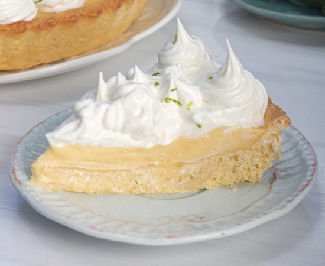

Pie de Limon

Description:
Pie de Limon is a such an amazing sensationally sweet and fresh Peruvian desert. Chillled lemon pie topped with a meringue. Nothing could be better. Straight up BEST desert Peru has to offer!
-Ingredients-
Base
- 2 and 3/4 cups all-purpose flour
- 1/3 cup sugar
- 3/4 cup salted butter, diced, cold
- 1 teaspoon vanilla extract
- 1 cold egg
Filling
- 1 and 1/3 cup condensed milk
- 1/2 cup lime juice
- 6 egg yolks
- 1 zest of lemon
Meringue
- 4 egg whites at room temperature
- 1 and 1/2 cups sugar
- 1/2 cups water
Instructions:
Base
- In the bottom of the mixer bowl, place the butter, sifted flour, and sugar. Turn the mixer on to high speed, and mix for about three minutes until you get a mixture similar to sand.
- When all the flour particles are moistened with butter, add the egg and vanilla.
- Beat for about three more minutes until the dough turns into a ball.
- Avoid touching the dough with your hand (to prevent any transfer of heat). Form the dough into a ball and put it on plastic wrap. Wrap it and put it in the fridge for at least an hour.
- Remove the dough from the refrigerator, it should be cold but still moldable. Remove the plastic wrap. Sprinkle wheat flour on a flat, clean surface. Place the ball of dough on the surface, and roll it out with a rolling pin.
- Lightly grease the mold where you will bake the pie. Carefully peel the dough off the table, and place it on the pan. Press gently with your fingers so that the dough adheres to the sides of the pan. With a knife remove the excess from the edge. Then, with a fork, poke holes in the surface of the dough. Put the mold in the fridge for approximately twenty minutes while the oven preheats.
- Preheat the oven to 150 °C/300 °F. Remove the mold from the fridge. Cover the dough with aluminum foil, and top with a layer of beans (or anything that acts as a weight) This will prevent the dough from expanding.
- After the first ten minutes of cooking. Remove the mold from the oven, and remove the aluminum foil. Bake for about 5 more minutes to brown. Remove the mold from the oven and let it cool.
Filling
- In a large mixing bowl, combine the condensed milk, lime juice, egg yolks, and lemon zest. Stir very well with a hand mixer, until all the ingredients are thoroughly combined.
- Pour the filling mixture over the base of the pie. Put it in the oven for about fifteen minutes until the filling begins to set. Remove from oven. When cool, store in the fridge, until the meringue is ready.
Meringue
- In a small saucepan over medium heat, add the water followed by the sugar. Without stirring, put the saucepan on the stove over medium heat.
- Cook for about ten minutes until the syrup reaches the so-called soft ball point (adding cold water turns it into a ball). You will have achieved the desired point when you dip a fork in the syrup and small balls of soft caramel form on the tips of the fork.
- While the caramel heats, beat the whites until stiff. Then add the caramel little by little to the beaten egg whites. Continue beating until you feel that the bowl material reach room temperature.
- Place the meringue in a pastry bag and decorate the lemon pie. If you wish, you can put it in the oven for another five minutes to brown. Then, refrigerate the pie for about two hours, before cutting it. If you wish, you can decorate it with thin slices of lemon, mint leaves or lemon zest.